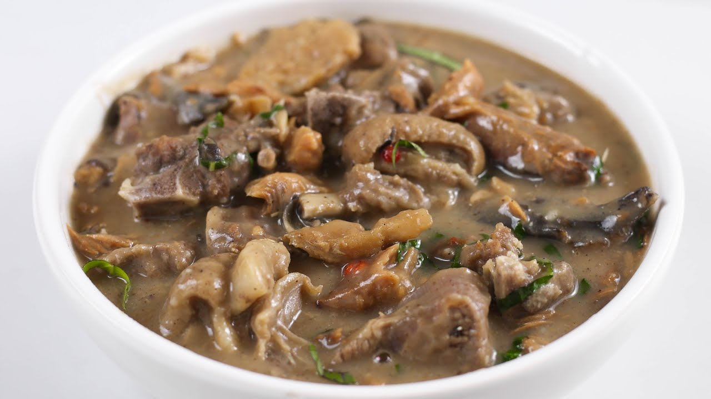

Home
White Soup

Description
White soup, or Nsala, is a light, spicy dish from Nigeria’s Igbo culture, made
without palm oil for a clean, subtle flavor. Thickened with yam and cooked with
chicken or fish, it’s seasoned with utazi leaves and pepper, often paired with
pounded yam. This simple yet bold soup is perfect for a cozy meal.
Ingredients
- 1 medium yam
- 1kg of chicken
- 1 smoked fish
- 1 handful of utazi leaves
- 1/4 cup of pepper
- 1 bulb of onions
- 3 stock cubes
- 1/2 cup of crayfish
- Salt to taste
Steps
- Boil the yam until soft, then pound or blend into a smooth paste and set aside.
- Season the chicken with onions, pepper, and stock cubes, then boil until tender.
- Add the smoked fish and crayfish to the pot, cooking for 5 minutes.
- Stir in the yam paste to thicken the soup, simmering for 10 minutes.
- Wash and shred the utazi leaves, add them, and adjust seasoning with salt.
- Cook for 5 more minutes, then serve hot with pounded yam.
Enjoy your meal!